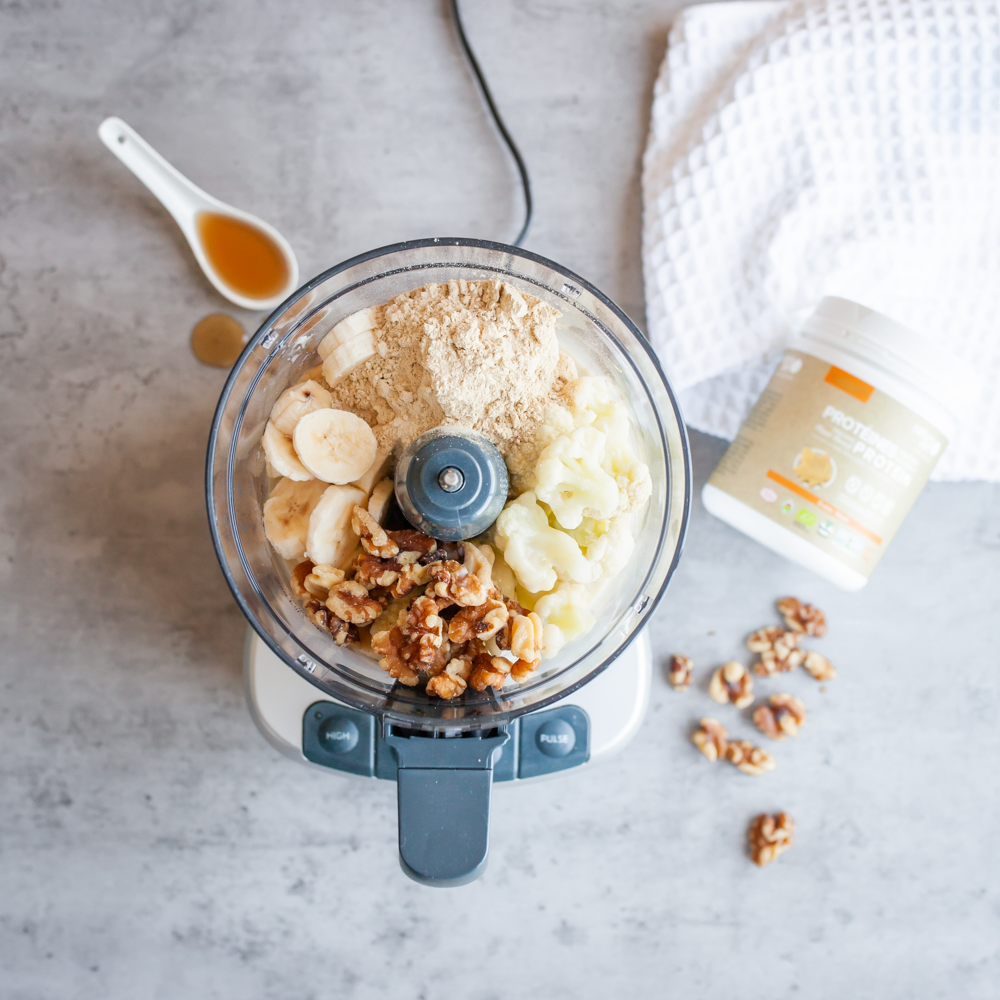

Protein Shake

Photo by Nature Zen on Unsplash
Description
This is my go-to recipe for a quick but tasty protein shake after a workout. I use plant-based protein powder, but any chocolate-flavored powder will do.
The secret to round out the flavor is the almond extract.
Ingredients
- 1/2 cup oat milk
- 2 scoops protein powder
- 1 banana
- 1 tablespoon creamy peanut butter
- dash of almond extract
- ice
Steps
- Add all ingredients to a blender
- Blend.